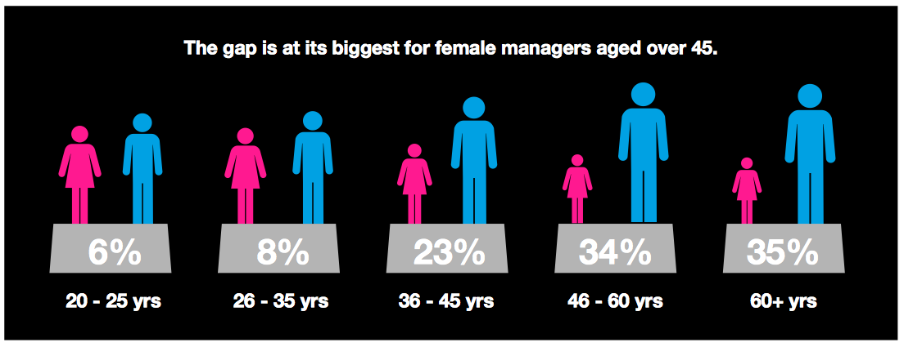

< < < Back
Study Shows Girls Get Better Grades For The Same Work As Boys – Return Of Kings
This year the OECD released a report which admitted, amazingly, that schoolboys receive worse grades for the same quality of work as their female peers. When even the unabashedly biased BBC is reporting on anti-male academic inequality, you know there’s a huge problem raging across societies. Just as surprisingly (in a refreshing way), both the report’s authors and most journalists were willing to lay the blame on blatant teacher bias in favor of girls.
And which gender predominates amongst the ranks of teachers? Women, of course. Female teachers favoring female students, who would have guessed!
With so many female teachers working in education, especially in the crucial early childhood years, and with feminist bureaucrats breathing down school leaders’ necks, the discrimination wielded against boys has been an open secret for years. Even when the methods of teaching the curriculum have been consistently gerrymandered to advantage girls, teachers are still finding ways to grossly penalize boys.
Boys study less but perform better on standardized tests

The individuals on the far right and second from left are recipients of intense structural academic privileges.
Another report by the BBC (have they finally started to report non-leftwing, objective pieces?!) sketched out how boys perform better at internationally-benchmarked Pisa science tests than girls. By contrast, girls outdo boys in science-based GSCEs, which are qualifications most British students meet by around the tenth grade. Unlike the GSCEs, Pisa tests are more standardized and cannot be studied for in the same way as regular coursework.
The implication is that when you strip girls of their female-biased teachers, boys outdo them, irrespective of male students paying less attention to their studies in the first place. The blame for girls’ poorer Pisa results was, as you would expect, laid at the feet of poor female self-confidence, a trigger term for “society discriminates against women, boo hoo!”
But with boys less likely to take performance in school science seriously, how can a lack of self-confidence suddenly be the resort of feminists?
Undermining the “discrimination against women in science” myth
With educational institutions pandering to women like Emma Sulkowicz, classroom and coursework-based discrimination against male students is par for the course.
In a recent debate, hosted by a journalism society from the University of Bristol, Milo Yiannopoulos throttled Rebecca Reid for the unsupported idea that “science,” apparently some sort of conscious, misogynistic entity, discriminates against girls. He cited a compelling Cornell University study, which found that women applying for STEM-related jobs were twice as likely to be hired than men with the same qualifications.
But are these qualifications even the same to begin with? After all, if the OECD is finding that girls are getting better grades for the same work simply because of their gender, the preferential treatment uncovered by Cornell is likely to be even larger. With inflated grades in both science and non-science subjects, such as English, girls’ GPAs in the United States and A-Level results in the United Kingdom increase their chances of being accepted into the universities and degree structures they apply for. A better degree then means a better chance of impressing future employers.
Cornell found women with STEM degrees were twice as likely to be hired than men with the same qualifications. This in addition to the higher grades they receive in school for the same work.
And what happens in university itself? To argue that the kinds of anti-male trends in primary and secondary schooling do not flow to tertiary education would be the scam of the decade. Remember, universities are the same institutions that would have students and the wider public believe that, based on “statistics,” campuses are many times more rape-prone than the Congo or South Central Chicago.
By proxy, male students undertaking law, medicine, and other degrees are therefore many times more likely to rape than unemployed and uneducated men in the world’s worst social and economic ghettos. It’s hardly a leap of faith to suppose that academics who label male students as routine rapists would shortchange their grades, too.
There is, additionally, the snowball effect of being explicitly or implicitly praised as being “smart.” Teachers are clearly treating girls with the same ability as boys as more gifted, rather than just awarding them better marks. This will, naturally, impact upon the academic trajectory of each gender. Boys will think that higher education, or certain forms of higher education, are simply not for them. Conversely, girls will aspire higher, despite not actually producing objectively better results than their male peers.
Boys put less time into their literacy skills and suffer grade discrimination but end up basically just as good

Feminists throw around words and hope they form a coherent argument.
But the OECD has come up with the unexpected finding that this [female] advantage in school does not last into adulthood. When young men and women get to the end of their twenties, their reading skills are not that much different.
The OECD study, as reported by the BBC, makes it clear that with less time and effort invested in their earlier studies boys still end up essentially par with their female contemporaries in terms of literacy by the end of young adulthood. Boys are also less likely to pursue tertiary education in the first place, making the parity by around age 30 more impressive still.
In this sense, the OECD report shows the great, untapped promise of male students. Having already been the victims of decades’ worth of systemic barriers, they are still able to reach the same level as more mollycoddled female students. Amidst the savage vitriol of man-hating feminists, we need to be able to recognize and then channel the abilities of men.
When statistics ever prove a gender gap, it will be against males

No, men work longer hours, choose much harder careers, and take less vacation time.
For years, society has been fed the lie of the female pay gap. To quote Yiannopoulos, “no serious economist believes this stuff.” What we do have is incontrovertible evidence that there is a pro-female grade gap.
And what will likely happen? Nothing. Why? Because a person with testicles runs Goldman Sachs, significantly more able male soccer players earn more than their inferior female counterparts or something similar. In the meantime, millions of boys who perform as well as their female peers will be discriminated against. Feminism wins, right?
Read More: This Is Why Girls Go For Bad Boys